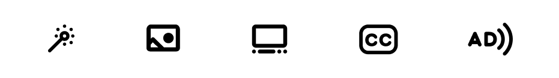
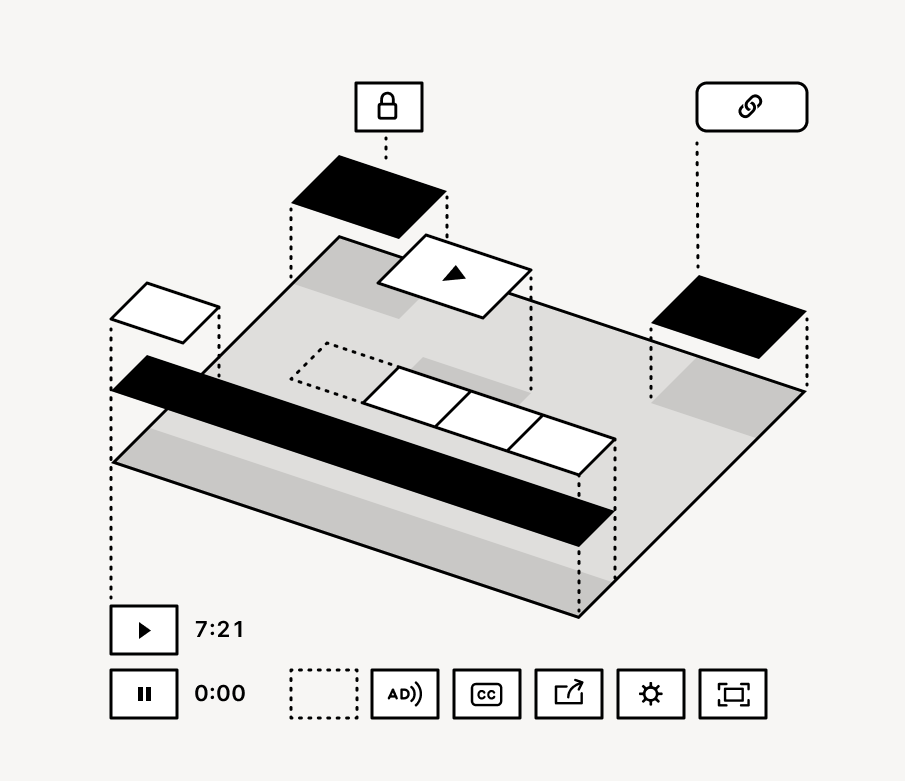
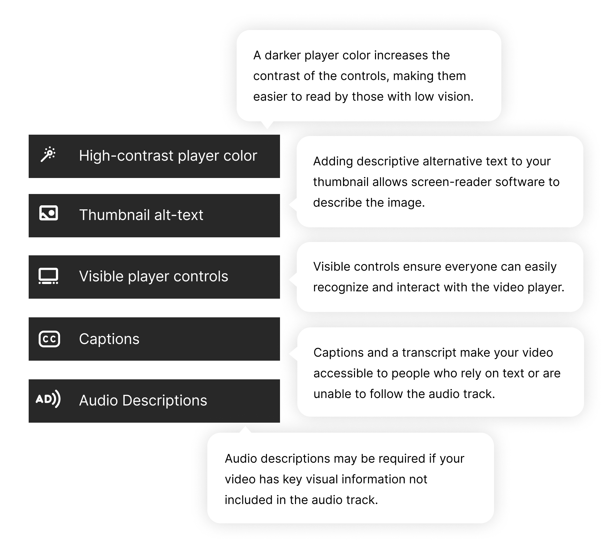
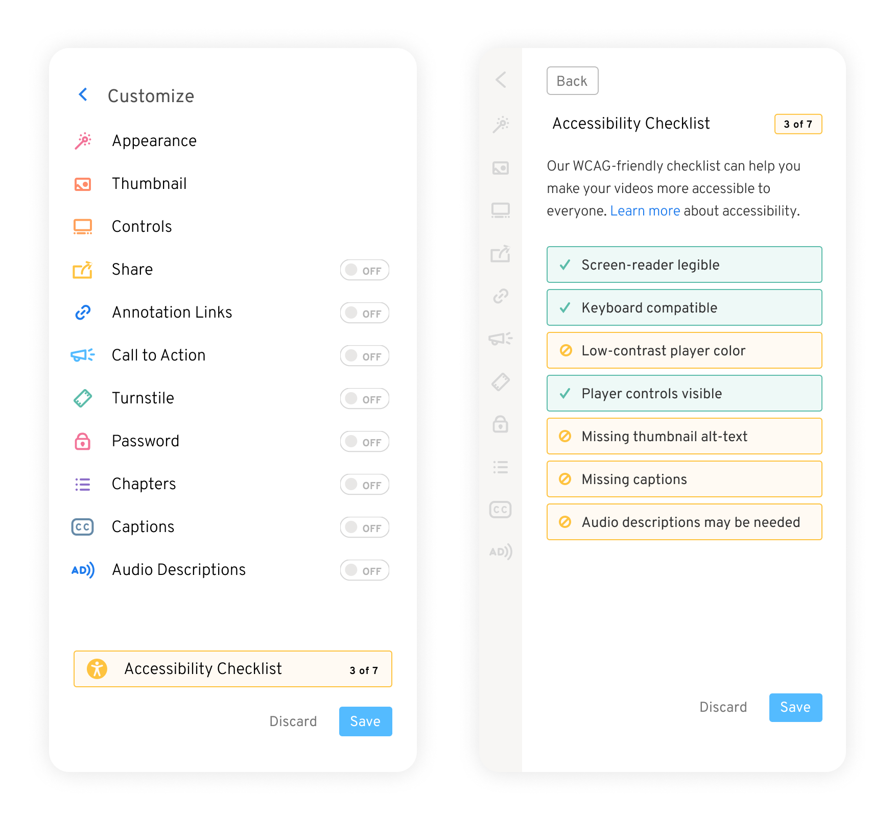
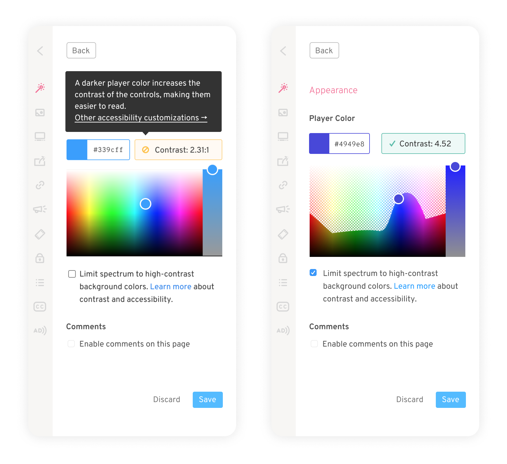
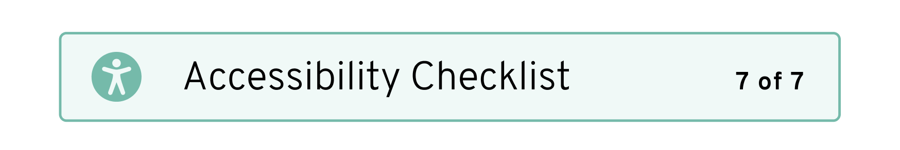

Video Accessibility
Making the fastest, most-customizable video player on the internet also the most-accessible.
Context
As a hosting platform, Wistia loads a video over 60 million times a day on every device type imaginable, on any connection, everywhere in the world. As the lead designer of the video player, that means focusing on efficiency (every kilobyte counts!), usability (every click counts!), and removing any barrier to access that a viewer might encounter. The team set an internal goal of having the most accessible video player on the internet, and I partnered with an engineer to study WCAG's accessibility standard and begin an audit. Meeting our goal began with a few tweaks but quickly grew into a much larger project.
Video Player
To begin with, there are a host of visual adjustments needed to make sure every UI element was sufficiently high-contrast. The goal of Wistia's player is to keep the focus on the content and let the container take the back seat, which is why the player uses transparency to reduce the visual weight of the controls. Making sure every possible scenario meets recommended contrast levels required extensive tweaking and a new, high-contrast play bar, whose design followed the visual language of the icons.

These visual updates were paired with technical improvements to make the player screen-reader friendly, keyboard navigable, and able to support Audio Descriptions. These are all important aspects of accessible video, but there are some aspects of video accessibility that we can't just fix behind the scenes.
User Choices
Some important aspects of accessibility depend on choices our customers make, like configuring Captions and Audio Descriptions, or taking the time to add alt-text descriptions to their video's thumbnails. Control over the look and feel of the player is one of the features our customers mention most as their reason for choosing Wistia, so it's important to preserve even the customizations that can make a video inaccessible (like hiding all the controls on page load). But we could make sure customers never make those choices without realizing what's at stake.
Microcopy
In order to help our customers choose accessibility, the product has to educate users about the technical details, convey the value of taking action, and guide them through the work. Clear and concise copy is the backbone of the best interface design. Before designing any changes in the app, I first developed language for explaining video accessibility in an easy, approachable way. I drafted and workshopped the copy, and tested it with users to make sure it was technically correct and comprehensible. These five tooltips explain the basics of video accessibility in only 86 words!
Accessibility can be an intimidating topic, and by suggesting the audience that benefits from each of these features, the explanations engender empathy and motivate the user to take action. While testing revealed that the message was clear, it was another challenge to put this copy in the appropriate context.
Checklist
One of Wistia's most popular features is the control and rich video customizations the platform offers. With richness comes considerable complexity, and accessibility features and details appear in many different places. To guide users from section to section, I designed an Accessibility Checklist to serve as an education tool and navigational guide while users are customizing their video.
The checklist elements show either a pass or fail state, and on hover or keyboard focus they display a tooltip with an explanation of the feature. Clicking on them opens the relevant section in the customize tool set, where a user may make the needed change. These sections all link to robust documentation and back to the checklist, which displays a success message once all the accessibility criteria are met.
Picking accessible colors
While most of the customization sections support the necessary functionality, one element that required a full redesign was the color picker that sets the color of the video player. In order to guide users towards darker colors (but still allow for inaccessible options), I redesigned our color picker and structured it to emphasize hue and lightness and deprioritize saturation. It allows the spectrum to toggle between all possible colors and only those that result in high-contrast controls. My favorite detail of this design is the animated transition, which communicates how the spectrum is being constrained and conveys how far a low-contrast color must "travel" in order to reach the minimum contrast threshold.
Success!
Once all the issues have been addressed, the top-level view of a video's customization settings shows that the Accessibility Checklist is complete. This means that the video passes WCAG's AA-level accessibility standard, which is no small feat! This is particularly valuable for government agencies and universities, which may be obligated to meet that standard, and it's a standard most video platforms cannot meet. This differentiating feature led directly to new sales within days of launching, and was an opportunity for Wistia to publicly express its values of inclusivity and to lead the industry with good design.